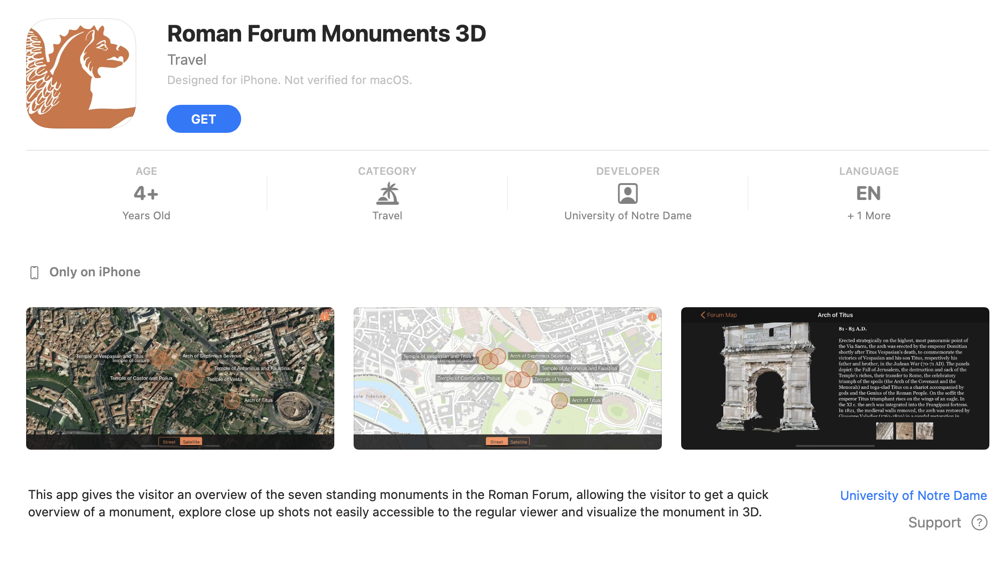
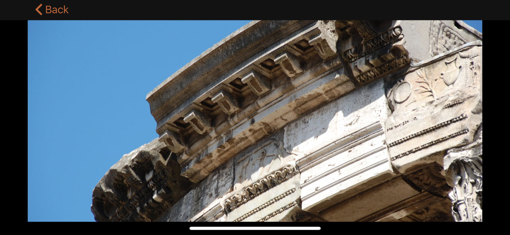

|
Our research of the historical monuments bring to your mobile device |
||||
|
New App (available under Apple Store for free) enables Forum visitors to explore background information, view close-up images of inaccessible areas, and interact with 3D reconstructions of the monuments as they tour the site. The Roman Forum App gives visitors an overview of the seven standing monuments in the Forum as they navigate a satellite map of the site. These include the five ancient temples and two triumphal arches. The app is a product of 3D scan and imagery data collected between 2010 and present day on the site. The app allows the visitor to get a quick overview of the monument in question and some up close images of areas typically not accessible to the general public. The 3D model allows visitors to look around the remains of the monuments in a 360° rotatable and zoomable view. The app is a result of the work of the DHARMA Team under the direction of Prof. Krupali Uplekar Krusche from the University of Notre Dame.  |
||||
|
Interactive approach to representation of large-scale architectural monuments |
||||
|
Goals and scopes of the interactive app (credit: DHARMA) |
||||



In partnership with
Ministero per i Beni e le Attività Culturali
beniculturali.it
Parco Archeologico del Colosseo
Dr. Alfonsina Russo, Director
Dr. Patrizia Fortini, Roman Forum Management
parcocolosseo.it
University of Notre Dame
DHARMA Team
- Prof. Krupali Uplekar Krusche, Director DHARMA, School of Architecture
- Prof. Giovanna Lenzi Sandusky, Italian Studies – College of Arts and Letters
VisArray Team, Center for Research Computing
- Prof. Christopher Sweet, Associate Director
- Kristina Furse Davis, Visual Strategist
- Markus Krusche, Product Owner
- James Sweet, PhD researcher (Computer Science)